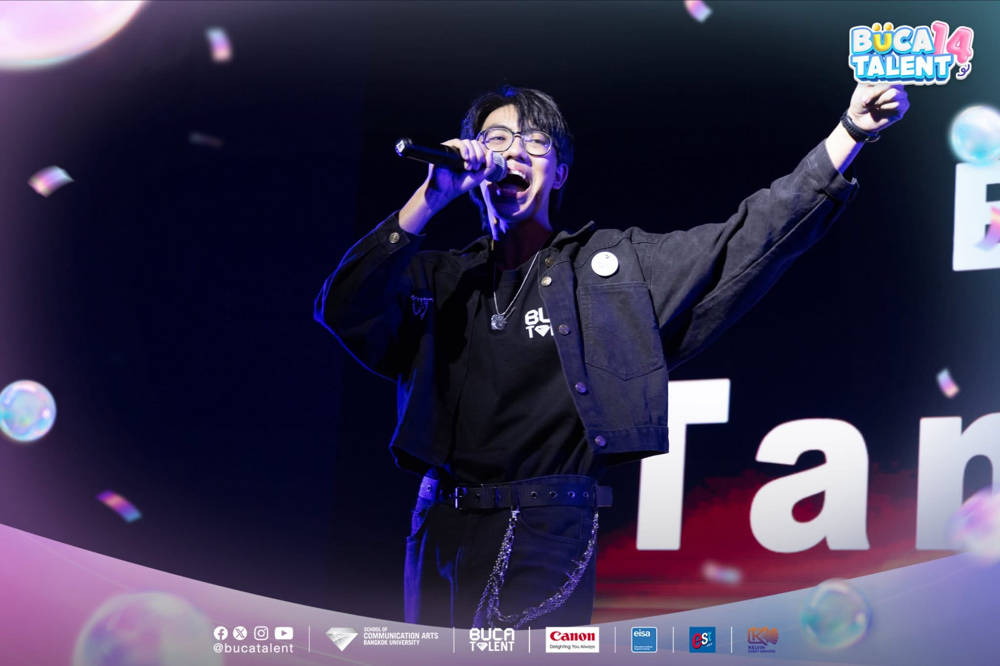
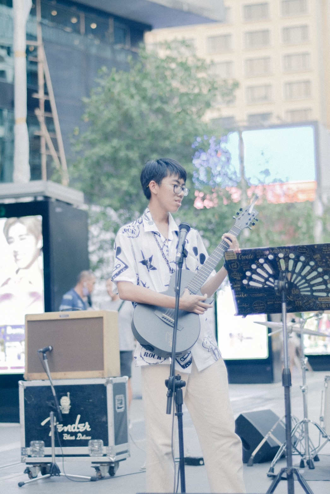
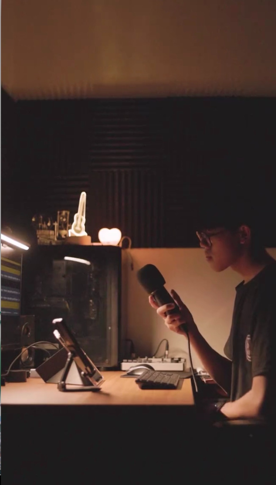
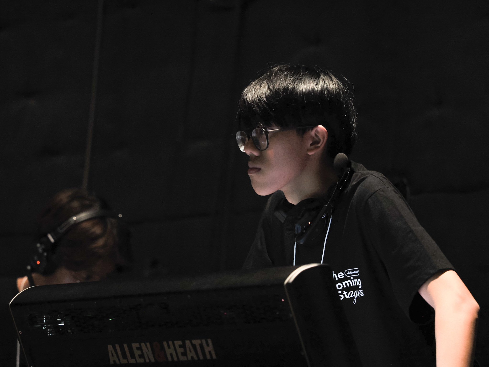

01
SINGLE · 2025
ตรงนี้ก็พอ
It's Enough Here
เพลงว่าด้วยการยอมรับและพอใจกับสถานะที่เป็นอยู่ แม้ความรู้สึกบางอย่างจะยังอยู่ตรงนั้นก็ตาม.
Artist · Tang MiuWritten, Produced, Recorded, Mixed & Mastered · Tang Miu
INDEPENDENT ARTIST · MUSICIAN
Music made from feelings, memories and moments that are sometimes easier to sing than to say.

01 / THE ARTIST
Tang Miu is an independent indie pop artist who began his music journey in 2017. He writes, records and produces his own music, turning personal experiences and small everyday feelings into songs. Each release is part of an ongoing diary — a record of where he was, what he felt, and what he is still becoming.
02 / MUSIC
Three official releases currently form the first chapter.
SINGLE · 2025
It's Enough Here
เพลงว่าด้วยการยอมรับและพอใจกับสถานะที่เป็นอยู่ แม้ความรู้สึกบางอย่างจะยังอยู่ตรงนั้นก็ตาม.
SINGLE · 2025
No More
A collaboration with YOVYN about holding on to memories after a relationship has moved on, and learning to let the past become the past.
SINGLE · 2026
Reset
A song about stepping back from a relationship that no longer feels the same, and accepting that sometimes friendship is the place where a story has to end.
03 / LIVE
Selected performances from 2026.
15 MAR 2026
Live @ MBK Center · Talent Everywhere by OKMD
28 MAR 2026
Final Stage · performed ไม่มีที่สิ้นสุด (Limitless) as a live stage performance.
2026
Live @ Holiday Pop Fest Vol.4 · Banthat Thong Road, Chula Soi 5
04 / COVERS
Selected cover work and re-arrangements.
COVER PROJECT · 2026
Original by BUS
A personal re-arrangement and re-production by Tang Miu, including vocals, guitars, instruments and backing vocals.



05 / ABOUT
Tang Miu is an independent indie pop artist and musician who began his music journey in 2017.
Working largely by himself, he writes, records and produces his own music. His songs are built around ordinary feelings — uncertainty, memories, quiet attachment, change and the moments that stay with us longer than expected.
He is still learning, and that is part of the point. Each song becomes another page: not a finished portrait, but a record of growth.
06 / PRESS
Official artist information, selected work and contact details are collected here for reference. For interviews, bookings, collaborations or professional enquiries, use the contact below.
07 / CONNECT
For bookings, collaborations, media enquiries or other professional contact:
tangmiuofficial@gmail.com ↗